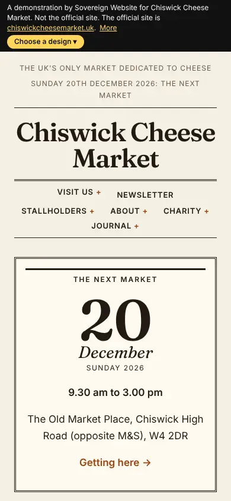
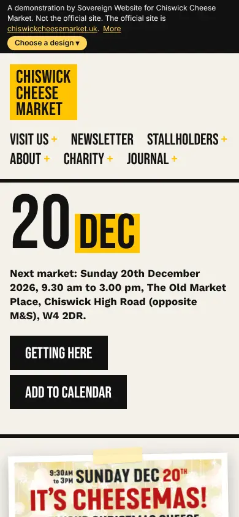
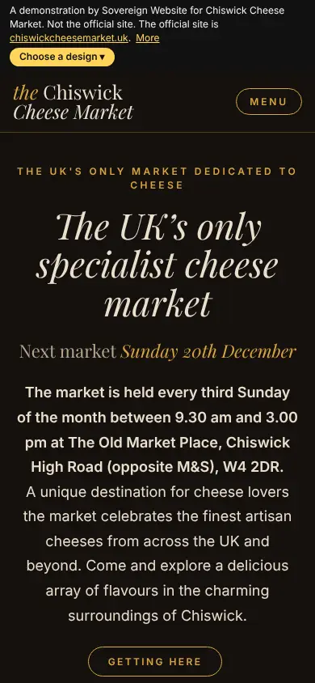
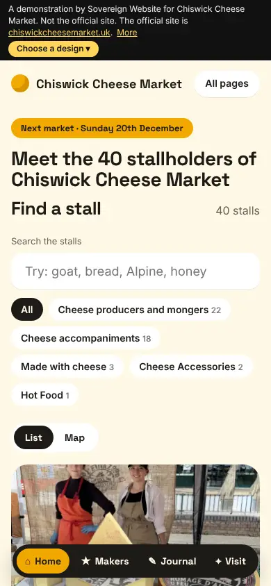

Synthetic users: Chiswick Cheese Market demonstration, pass 2
Site: https://chiswick-cheese-market.organisation.sovereignweb.site/ at b301884 (v0.1.6): pass 1 built (2 The Market Paper, 3 The Poster Wall, 4 The Cave, 5 The makers). Run: 20 November 2026, about 22:45 UTC, by design.b.rounds. Look score: 3.2 (3, 3, 3, 3, 4), up from 3.0. Best design votes: 3, 5, 2, 3, 5. Weakest: design 4, by four of five. The review.
Method: Synthetic users. One agent played all five personas in turn. It was given the first phone and desktop screens and the whole phone page for the front door and each design's home, plus the visible text, and was told that design 5's tab bar is fixed to the bottom of the screen. These are simulations: they inform a rating, and never replace the measured checks or a real person.
What each persona thought each design was about
| Persona | 2 | 3 | 4 | 5 | Best | Weakest | Look |
|---|---|---|---|---|---|---|---|
| Phone visitor | a newspaper | the date as an event | mood | a stall finder | 3 ("the answer in two seconds") | 5 | 3 |
| Regular shopper | a paper with listings | posters | an atmosphere | a searchable directory | 5 ("I can search goat or honey") | 4 | 3 |
| Low-vision reader | a newspaper | loud posters | a dark cellar | an app | 2 (contrast, size, order) | 4 | 3 |
| Design critic | a broadsheet, "an assured serif and a real grid" | the event, carried by the market's own posters | "design 1's running order, darkened" | a product-style directory | 3 | 4 | 3 |
| Market organiser | our journal as a newspaper | our posters | "moody and generic" | "our traders up front" | 5 ("traders are why people come") | 4 | 4, "nearly a wow at the poster wall" |
Three of the four designs now read as what they were meant to be. The Cave does not.
Agreed by three or more
- Design 4 is the weakest: mood without a purpose of its own, harder to read, names cut off on the shelves (four).
- No design says which stallholders come to the next market (three). The data does not hold it.
- The next market date is easy to find everywhere, and fastest in designs 2 and 3 (three).
- Small slips undercut trust: - the front door's names ("Journal", "Poster", "Cellar") do not match the designs' own; - a missing full stop; - a "Map" with no locations behind it (three).
What the personas saw




Pictures in these screenshots are the market's own, from chiswickcheesemarket.uk, as shown on the demonstration.